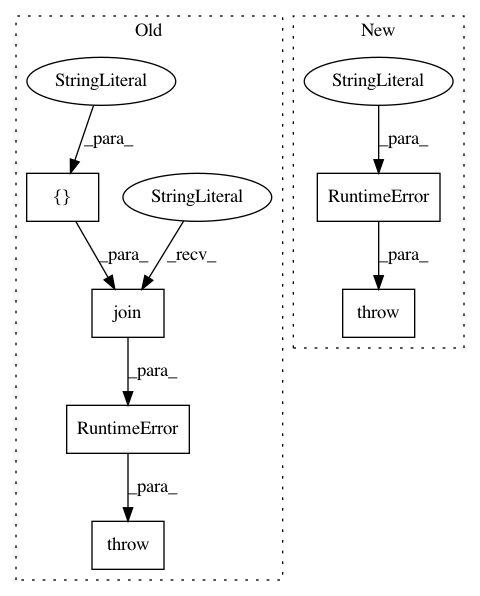

c9dc31f349540d610f75bbd469f8421db9eb216c,gpytorch/likelihoods/bernoulli_likelihood.py,BernoulliLikelihood,forward,#BernoulliLikelihood#Any#,23
Before Change
p(y|x) = \Phi(\frac{\mu}{\sqrt{1+\sigma^2_f}})
if not isinstance(input, GaussianRandomVariable):
raise RuntimeError(
" ".join(["BernoulliLikelihood expects a Gaussian", "distributed latent function to make predictions"])
)
mean = input.mean()
var = input.var()
After Change
p(y|x) = \Phi(\frac{\mu}{\sqrt{1+\sigma^2_f}})
if not isinstance(input, MultivariateNormal):
raise RuntimeError(
"BernoulliLikelihood expects a multi-variate normally distributed" "latent function to make predictions"
)
mean = input.mean
var = input.variance
link = mean.div(torch.sqrt(1 + var))
In pattern: SUPERPATTERN
Frequency: 3
Non-data size: 6
Instances
Project Name: cornellius-gp/gpytorch
Commit Name: c9dc31f349540d610f75bbd469f8421db9eb216c
Time: 2018-09-25
Author: gpleiss@gmail.com
File Name: gpytorch/likelihoods/bernoulli_likelihood.py
Class Name: BernoulliLikelihood
Method Name: forward
Project Name: cornellius-gp/gpytorch
Commit Name: 15b3563c3c7f700ee0bf23b0477527dfa5323cea
Time: 2018-06-07
Author: balandat@fb.com
File Name: gpytorch/likelihoods/softmax_likelihood.py
Class Name: SoftmaxLikelihood
Method Name: forward
Project Name: cornellius-gp/gpytorch
Commit Name: 6166891b90f5138fd8bc1444826b6d1c4d9848db
Time: 2017-09-20
Author: gpleiss@gmail.com
File Name: gpytorch/kernels/grid_interpolation_kernel.py
Class Name: GridInterpolationKernel
Method Name: forward